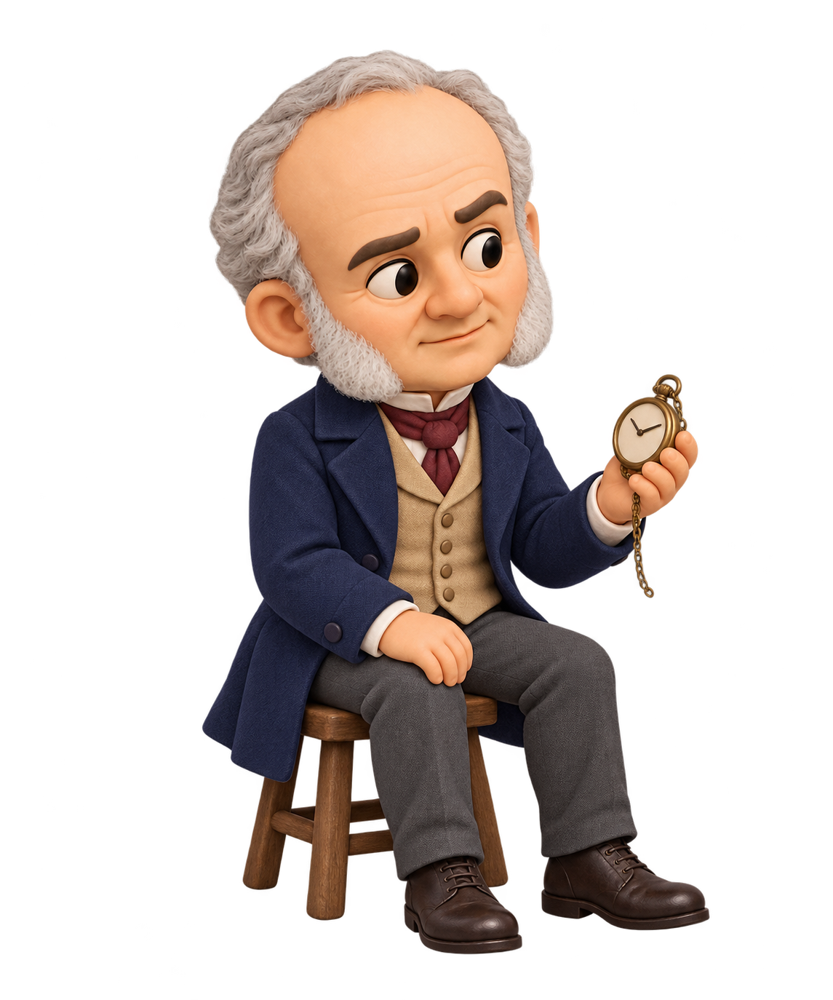
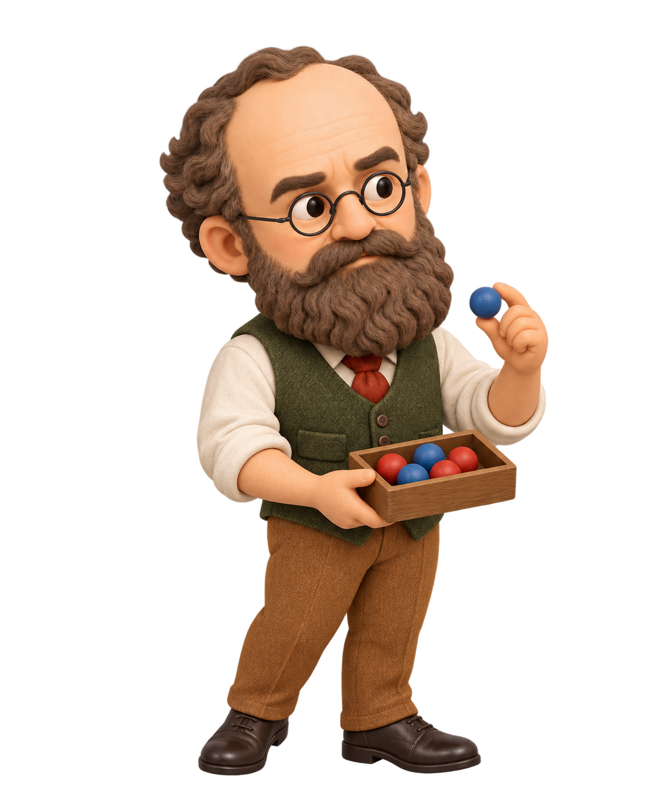

기존 과학자 캐릭터의 질감과 비율을 참조한 신규 인물 · v02 · 투명 배경 PNG

엔트로피 개념 도입
남색 코트 · 앉은 자세 · 회중시계

엔트로피의 통계적 해석
초록 조끼 · 서 있는 자세 · 입자 모형 상자
설명 근거: 클라우지우스 1865년 논문 발췌 · 볼츠만 1877년 논문 번역. 볼츠만은 엔트로피를 미시 상태의 수와 연결하는 통계적 해석을 발전시켰다.
실제 사진이 아닌 수업용 신규 생성 캐릭터다. 본 수업은 엔트로피를 정성적으로 다루며 통계식의 정량 계산은 포함하지 않는다. 원본 캐릭터 라이브러리는 변경하지 않았다.